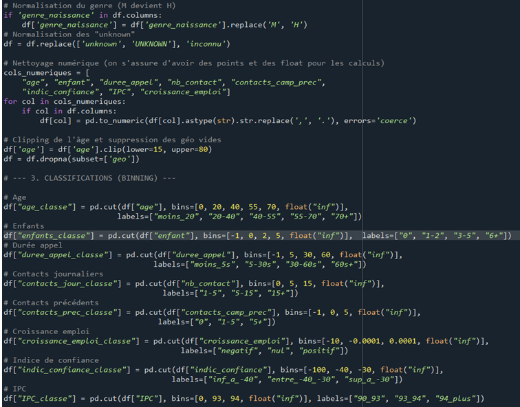
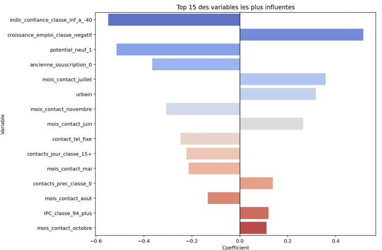
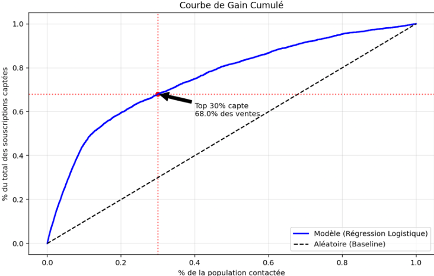

Projet d'Appétence : Modèle de Scoring Épargne
Contexte & Enjeux Business
Au sein d'une assurance de la branche crédit et épargne, les campagnes d'appels téléphoniques destinées à proposer des produits financiers se heurtent à de fortes contraintes opérationnelles : capacité d'appel limitée des forces de vente, coût humain horaire élevé et risque de saturation ou d'irritation de la base clientèle en cas de sollicitations excessives.
Notre mission en tant que Data Scientists a été de basculer d'une logique de volume (contacter l'ensemble de la base au hasard) à une logique de valeur. Pour cela, nous avons développé un modèle prédictif capable de calculer la probabilité d'appétence de chaque client afin de prioriser le ciblage commercial et maximiser le retour sur investissement (ROI).
Méthodologie Data Science : De la Donnée brute au Score
1. Préparation et Assainissement des Données
Afin de garantir la stabilité du modèle de régression logistique, un pipeline de nettoyage rigoureux a été implémenté en Python :
- Normalisation : Harmonisation des genres et imputation sémantique des valeurs manquantes (les labels
unknownont été convertis de façon transparente eninconnu). - Correction sémantique et numérique : Conversion des encodages de variables macro-économiques (remplacement des virgules par des points) pour stabiliser le traitement de l'Indice des Prix à la Consommation (IPC) ou du taux de croissance de l'emploi.
- Gestion des Outliers (Clipping) : Bornage de la variable âge entre 15 et 80 ans. Ce choix stratégique permet d'englober tous les cycles de vie financière (du premier livret jeune à l'épargne de fin de carrière) sans que les profils extrêmes ne biaisent les coefficients.
2. Traitement des Corrélations et Discrétisation (Binning)
Le comportement des épargnants étant intrinsèquement non linéaire, nous avons segmenté les variables numériques en classes métiers (tranches d'âge de vie active, paliers de pression commerciale basés sur le nombre de contacts passés, et cycles économiques positifs/négatifs).

Ce seuil de 0.85 élimine le bruit mathématique induit par la multi-colinéarité (les variables redondantes), tout en protégeant les indicateurs clés développés à la main pour l'expertise métier.
3. Feature Engineering : La création de « Pépites » Métier
En l'absence de données géographiques fines impossibilitant une jointure externe sécurisée, nous avons valorisé notre compréhension du domaine bancaire en synthétisant quatre nouvelles variables hautement discriminantes :
zero_dette_total: Isole les profils n'ayant aucun crédit immobilier, aucun crédit à la consommation, ni aucun historique de défaut. Il s'agit du cœur de cible disposant de la meilleure capacité d'épargne.potentiel_geo_financier: Score pondéré croisant le niveau socio-professionnel (type d'emploi) et l'écosystème d'habitation (Urbain / Rural).potentiel_neuf: Identifie les prospects jamais contactés, détectés au sein d'un contexte macro-économique de croissance d'emploi positive.client_gold_moment: Repère les clients historiques ayant déjà souscrit par le passé, ciblés lors des mois affichant les plus forts taux de transformation saisonniers (Juin, Juillet, Octobre).
Analyse des Facteurs Clés d'Appétence
Pour compenser le fort déséquilibre de la base initiale (contenant plus de 70 % de non-souscriptions), nous avons appliqué le paramètre class_weight='balanced'. L'interprétation des coefficients de notre régression logistique met en évidence les leviers de souscription :
- Leviers Positifs : Le modèle révèle un fort comportement d'épargne de précaution. Lorsque le marché de l'emploi montre des signes d'incertitude ou de décroissance, les clients cherchent à sécuriser leur avenir financier. Les périodes de milieu d'année (Juin/Juillet) et le statut urbain agissent également comme des catalyseurs de conversion.
- Freins Majeurs : Un pessimisme économique marqué (Indice de confiance des consommateurs inférieur à -40) ainsi que la pression commerciale excessive (le harcèlement téléphonique au-delà de 15 contacts) coupent net toute intention d'achat.
Performances et Stratégie de Ciblage Commercial
L'Arbitrage Précision / Recall au service du ROI
Pour répondre aux contraintes budgétaires serrées des directions d'appels, nous avons volontairement calibré le curseur de décision sur un **seuil de probabilité élevé (0.9)**, favorisant la Précision (0.62) au détriment du Recall (0.23) :
- Une rentabilité chirurgicale : 6 appels sur 10 passés se soldent désormais par une souscription effective, limitant les coûts d'appels inutiles et réduisant la fatigue des équipes commerciales de terrain.
- La règle des 30/70 validée : En ciblant uniquement le **Top 30 % des profils les mieux scorés**, l'entreprise capte **68,1 % du volume d'affaires total**.
- Optimisation de la conversion : Le taux de transformation au sein de ce segment ciblé bondit à 22,41 %, contre un taux d'appétence naturel de seulement 10 % sur l'ensemble de la base non triée.



Figure 1 : Analyse des gains cumulés (Lift Chart) et concentration du ROI sur les déciles supérieurs